Tutorial The Hague building pit
Requirements
- Be sure QGIS version 3.22.00 or higher is installed.
- Be sure the
gistimPython package is installed (see installation for instructions). - Download the tutorial material. Follow this link.
- Installation of the QGIS-Tim plugin and the MOD plugin is part of this Tutorial. The necessary ZIP files are included in the tutorial material.
- Internet connections is optional during this Tutorial. It is only required for installation of additional plugins and the use of an online topographic background map.
Description
In this tutorial, you will learn how to:
- install and use the QGIS-Tim plugin;
- use the basic of QGIS for pre- and postprocessing of Tim;
- create several steady state models (TimML) and a transient model (TTim);
- analyse the results;
- export your model to a Python script.
Objective
Calculation of a pumping well extraction.
Introduction case The Hague
In the old city centre of The Hague a building plan with a parking basement is constructed. The dimensions of the building pit are 34.2 m * 83.2 m. The area is shown in Figure 1.
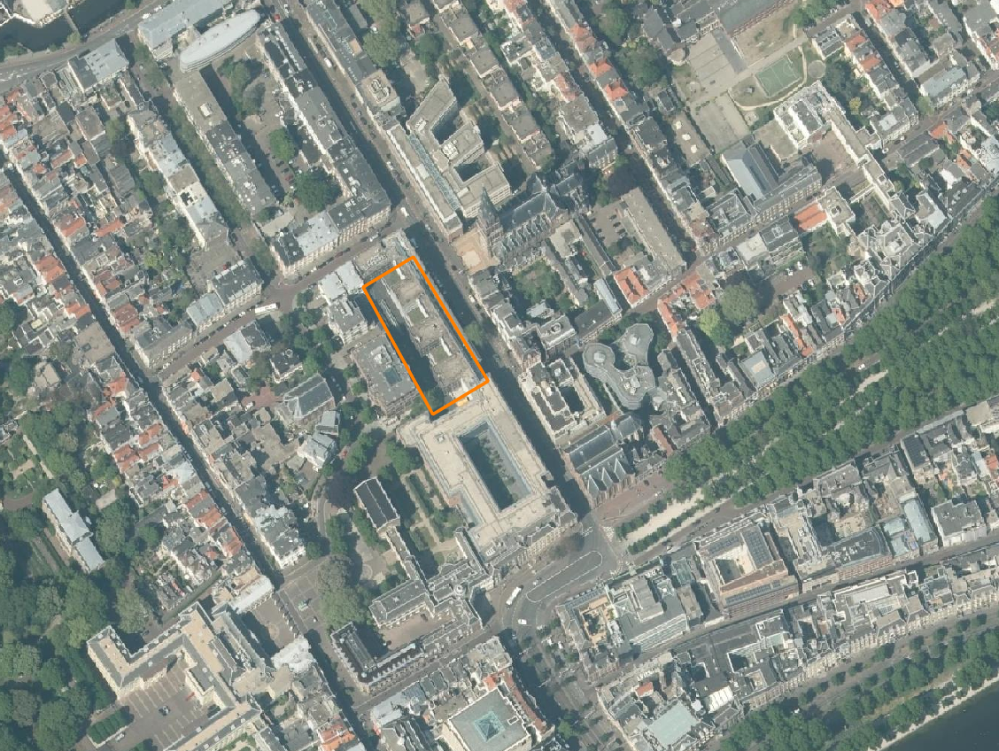
To carry out the construction in dry conditions, the groundwater level needs to be lowered by 3.5 m. The required drainage time is 4 months.
The environment is vulnerable with valuable buildings and monuments (see Figure 2) that have a shallow foundation. The subsoil consists of sandy layers which locally contain shallow peat/clay/silt layers and deeper layers of clay/silt. The builder contractor must use a sheet pile wall that needs to be installed in a water-retarding layer (aquitard).
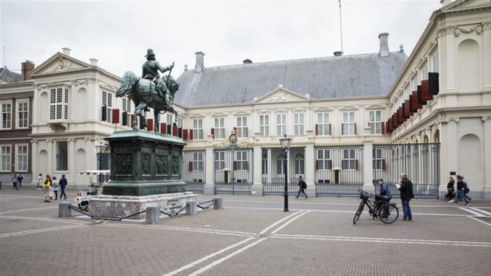
The questions to be elaborated in the hydrogeological advice is:
“How deep should a sheet pile wall be placed to prevent damage? Can risks arise from a leak?”
Applications of a sheet pile wall (with a hydraulic resistance of 100 days) and a concrete cut off wall (with a hydraulic resistance of 1000 days) need to be studied.
The soil profile has been investigated with borings and CPTs. An example of a CPT is shown in Figure 3.
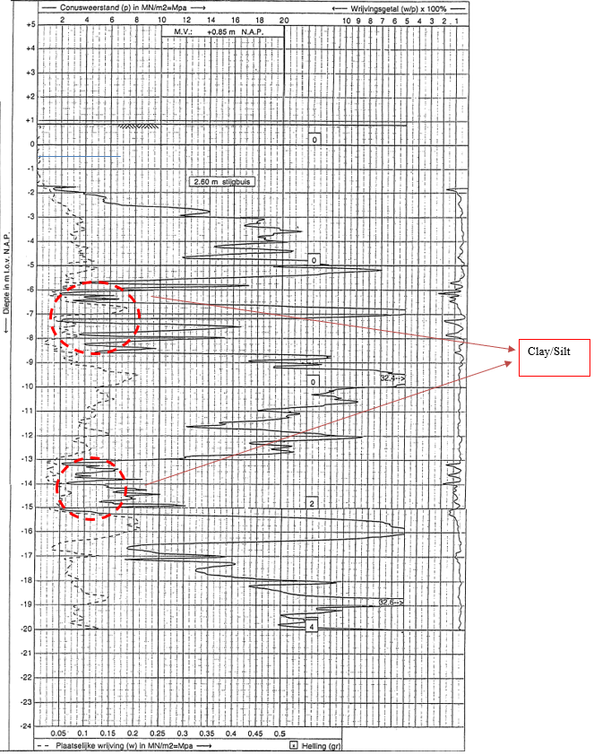
The interpretation of the CPT and borings gives the following soil layer scheme:
- The soil mainly consist of fine sand in Holocene layers (max depth NAP -15 m) and coarse sand in deeper Pleistocene layers.
- Just below the groundwater level (NAP -0.5 m), there is an approximately 1.5 m thick peat/clay/silt layer (not in CPT).
- The layer between NAP –5.5 m and –8.5 m consists of clay lenses. There is little certainty about the resistance of that layer.
- Between NAP –13 m and –15 m there is a clay/silt layer.
Based on experience in this region, the following geohydrological schematization is known (Table 1). The layer depth is indicated relative to the groundwater level of NAP-0.5m:
| Cluster | Layer type | Layer Bottom | c | K | E-oed |
|---|---|---|---|---|---|
| [m] | [days] | [m/day] | [kPa] | ||
| 1 | Aquitard | -1 | 3000 | 33 | |
| Aquifer | -5 | 10 | 160 | ||
| 2 | Aquitard | -8 | 40 | 10000 | |
| Aquifer | -13 | 10 | 170000 | ||
| 3 | Aquitard | -15 | 100 | 6000 | |
| Aquifer | -60 | 25 | 200000 |
According to DINOloket the average groundwater level on site is NAP -0.5 m. There are strict demands from authorities for allowable groundwater lowering. The maximum allowed drawdown outside the construction pit is 0.1 m.
To perform the calculation, dewatering is schematized to 8 wells.
Tip: Don’t place the wells in the model too close to the sheet piles. Tasks:
- Which element from the Tim package would you use to place the wells and sheet piles?
- Do you need to install sheet piles deep (in sand layers of aquifer 1 and 2) or shallow (only in the first sand layer of aquifer 1)?
- Investigate the effect of the presence of a lower or higher hydraulic resistance in the layer between NAP -5.5 m and -8.5 m.
- Estimate the extraction rate to keep the building pit dry.
- What are the risks? Look at the groundwater drawdown outside the construction pit in situations with different sheet pile depth.
- Also check for point leaks. Model these leaks with a hole in the sheet pile in the southwest corner of the area.
Getting Started
Let’s first configure the gistim python installation again, to be sure that QGIS can find the gistim software.
- Open the Deltaforge prompt (search in Windows Start for “Deltaforge Prompt”). A black window pops up.
- In this window type
python -m gistim configureand press ENTER. - You can close this window now.
- Launch QGIS from your START menu, from your desktop or click on …\QGIS3.28.0\bin\qgis-bin.exe.
Intermezzo: QGIS language settings
Perhaps your QGIS was installed in another language than English. Because the Tutorial refers to the English version, let’s change to English.
- From the main menu click on Settings and select Options (e.g. in Dutch Extra and Opties).
- In the new window go to the General section (Dutch: Algemeen) on the left.
- Check the box to allow Override System Locale (Dutch: Landinstellingen negeren) and expand this sub menu.
- From the drop-down menu “User interface translation” (Dutch: Vertaling gebruikers-interface) select American English and click OK.
- Close QGIS and open it again to activate your language change.
We start with the creation of a new QGIS project.
- From the main menu click on Project and select New.
The case in this tutorial is located in The Netherlands, so next we select the appropriate projection.
- From the main menu click on Project and select Properties.
- In the Properties window select the category CRS, search for “EPSG:28992” and you find “Amersfoort / RD New”. Select this option and click the Apply button, followed by the OK button to close the window.
In case your work is mostly in The Netherlands and in the “Amersfoort / RD New” projection, consider making this your default projection.
- From the main menu click on Settings and select Options….
- In the section CRS and Transforms select CRS (handling), pick the radio button Use a default CRS and select “EPSG:28992 -Amersfoort / RD New”.
- Click OK.
- Close this window.
Install plugins
This is the moment to download/import four plugins needed for this tutorial. This is the list:
- the QGIS-Tim plugin. The development version, imported from a ZIP file.
- the iMOD plugin. The development version, imported from a ZIP file.
- the Value Tool. The official version, installed via the Plugin Manager of QGIS (internet connection required).
- the PDOK plugin. The official version, installed via the Plugin Manager of QGIS (internet connection required). This plugin gives access to a large database from which we will load the topographic maps and use the navigation option.
- Go to Plugins from the main menu and select Manage and Install Plugins… to open the plugin window.
- On the left section select Install from ZIP.
- Click the Browse button (
 ) and from the tutorial dataset select the ZIP file “QGIS-Tim_Tutorial\QGIS-iMOD-plugin.zip”.
) and from the tutorial dataset select the ZIP file “QGIS-Tim_Tutorial\QGIS-iMOD-plugin.zip”. - Click Install Plugin.
- In the same way, install the QGIS-Tim plugin using the ZIP file “QGIS-Tim_Tutorial\QGIS-Tim-plugin.zip”.
If you have an internet connection continue with the installation of the next two plugins from the QGIS plugin library.
- From the left section, select the group All to see all available plugins.
- Search for “Value Tool” and install it.
- Search for “PDOK services plugin” and install it.
- Make sure that under Plugins > Manage and Install Plugins > Installed now the 4 added plugins are checked.
- Close the Plugins window.
See in the toolbar section of QGIS that the plugins are installed:
- iMOD Toolbar
- QGIS-Tim

- Value Tool

- PDOK Services Plugin

Further in this Tutorial we will use some default toolbars that might be hidden at the moment. Let’s check that and unhide if necessary.
- Select View from the main menu and choose Panels and be sure these two toolbars are checked:
- Layers
- Browser. - Select View from the main menu and choose Toolbars and be sure these three toolbars are checked:
- Advanced Digitizing Toolbar
- Snapping Toolbar
- Attributes Toolbar.
Prepare your project
For navigation purposes, let’s load a topographic map for The Netherlands from the online PDOK database.
No internet connection? Follow the next steps to import a simple PNG file as a background.
- Go to Layer in the main menu, go to Add layer and select Add Raster layer.
- Use the Browse button (
- Click on Add and Close the window.
- If you do not see the map, select the layer “TopographicMapTheHague”, click your right mouse button and select “Zoom to Layer(s)”.
- Continue after step 26.
- If you do have an internet connection click on the PDOK plugin button () to open the “PDOK Services Plugin” window.
- From the tab PDOK Services search for “pastel” and you will find a WMTS type layer called “BTRM Achtergrondkaart WMTS”.
- Select the layer.
- In the section “laag toevoegen” click the button Onder.
- Close the PDOK window.
Our project area is in the centre of the city of The Hague so let’s navigate to that city using the PDOK plugin.
- Type “Parkstraat” in the PDOK search field, near the PDOK button ()
- One of the locations PDOK will find is “Parkstraat, ’s-Gravenhage”. Click on it and QGIS will fly you to the project location.
Let’s now open a shape file containing the circumference of the building location.
- Go to Layer in the main menu, go to Add layer and select Add Vector layer.
- Use the Browse button () and from the tutorial material select “…\QGIS-Tim_Tutorial\dbase\building_pit.shp”.
- Click on Add and Close the window.
 Tip: a fast alternative for adding layers: from the menu View > Toolbar add the Manage Layers Toolbar and use the button .
Tip: a fast alternative for adding layers: from the menu View > Toolbar add the Manage Layers Toolbar and use the button .
- In the Layers panel on the left, select the layer “building_pit”.
- Click your right mouse button and from the menu select Properties.
- In the new window go to the section Symbology on the left and try to pick a polygon style with only a contour color.
- Click on OK a to save and close the window.
Let’s save this project to be able to return to it later or in case of a crash of QGIS.
- Go to Project in the main menu, select Save As and select a folder and a file name for your project, e.g. “…\QGIS-Tim_Tutorial\Rijsenhout.qgz”
Open the QGIS-Tim panel
Now we are ready to activate the QGIS-Tim plugin.
- Click on the QGIS-Tim plugin button () and the QGIS-Tim panel appears.
- Go to the tab GeoPackage.
Here we will create an empty database (geopackage) to store all elements and parameters for the model. - Click the New button to create the GeoPackage and save it for instance in the folder with your tutorial data, e.g. “..\QGIS-Tim_Tutorial\dbase\case-TheHague.gpkg”.
Your window looks like in Figure 4.

- Check in the Layers panel on the left that your new geopackage is added as a group.
A sub group timml for the steady state model input, the sub group ttim for the transient model input and a series of output formats (vector/mesh/raster).
If you had no introduction to the Tim plugin, read the Intermezzo below for a general explanation of the components.
Intermezzo: introduction Tabs on the Tim panel
- GeoPackage: an overview of the elements in your geopackage. In case you switch to transient modelling, an extra column with ttim elements is added.
- Elements: a list of 14 Tim elements from which you can build your model.
- Compute: here you can define your domain and cell size, decide if your model is transient or not and change the output name.
- Extract: open an existing 3d geohydrological model (NC file) and extract the data for your project area.
Let’s save this project to be able to return to it later or in case of a crash of QGIS.
- Go to Project in the main menu, select Save As and select a folder and a file name for your project, e.g. “…\QGIS-Tim_Tutorial\TheHague.qgz”
Checking available data from LHM
We will now research what possible layer info is available from the LHM database (Landelijk hydrologisch model). Information from LHM is made available in the provided file “…\QGIS-Tim_Tutorial\LHM4.1-ondergrondmodel.nc”. The file contains rasterdata of both the 3D geological layering within The Netherlands and the corresponding geological parameterization (permeability, resistance, thickness).
- In the QGIS-Tim panel go to the Extract tab.
- Open the file “..\QGIS-Tim_Tutorial\dbase\LHM4.1-ondergrondmodel.nc” (this may take a minute because the file is 350 MB).
- Click the button Select by Polygon and draw a large polygon (> 250x250m) to select the area around the building location between Parkstraat and Oranjestraat (see Figure 1). Left-click several times and close the polygon with a right click.
- Then click the Extract button and save the extracted subsoil data to a CSV file, e.g. “Ex2DH.csv”.
A separate python window is opened and the selection is performed. You can follow the progress in your tool bar.

QGIS displays this error message in case your polygon is too small. In that case redraw your polygon for a larger area.
Automatically 2 CSV files will be created. One with average values for bottom and top of layers and aquifer permeabilities and aquitard resistances. The other contains statistics on the data.
- From a file manager on your laptop (e.g. Explorer) open the CVS files.
An example of values from the first CSV are presented in Table 2. In each LHM layer the Aquitard information is positioned on top of Aquifer.
| fid - |
layer - |
aquitard c |
aquitard npor |
aquitard s |
aquifer k |
aquifer npor |
aquifer s |
aquifer top |
aquifer bottom |
semiconf top |
semiconf head |
|---|---|---|---|---|---|---|---|---|---|---|---|
| 0 | 0 | ||||||||||
| 1 | 1 | 287 | 62.37 | -18.97 | -38.30 | ||||||
| 2 | 2 | 1 | 37.94 | -38.30 | -60.54 | ||||||
| 3 | 3 | 3056 | 13.21 | -66.62 | -77.50 | ||||||
| 4 | 4 | 708 | 9.25 | -84.59 | -88.38 | ||||||
| 5 | 5 | 3143 | 10.94 | -106.06 | -120.63 | ||||||
| 6 | 6 | 8092 | 5.68 | -151.11 | -254.94 | ||||||
| 7 | 7 | 17752 | 3.10 | -307.82 | -390.71 |
A choice should be made at which depth the hydrogeological base is chosen for this project. Where high aquifer k is followed by a large aquifer c the base is chosen. For this case the base is chosen at -60.5 m (all depth data in m NAP). As you can see, values for Holocene layers are not available here and thus not displayed in LHM results.
Aquitard resistance in the city is quite high, so a value of 750 days is best guess from experience.
For marine deposits at -12 a value of 50 to 100 days per meter layer thickness is a proper choice. The permeability of fine Holocene sand is chosen at 10 m/d.
Start your Tim model
We are now ready to define our first steady state model by parameterizing our Aquifer.
- From the Layers panel, select the layer timml Aquifer:Aquifer.
- Click your right mouse button and from the menu select Open Attribute table (
 ). Search for the same icon somewhere on the Attributes Toolbar.
). Search for the same icon somewhere on the Attributes Toolbar. - Switch to the editing mode in the table with a click on (
 ) Toggle Editing.
) Toggle Editing. - Then by clicking 3 times on (
 ) Add feature you will see new rows are added.
) Add feature you will see new rows are added. - Now you are able to fill in the desired values shown in Figure 5.
NB do not fill in column FID. ‘Autogenerate’ will takes care.

Closing this table window with the will not save the filled in data or stop the editing mode!
- Click on the Save-Edits button () to save you data during the process or click on the Toggle Editing Mode button () to stop edditing and QGIS askes you if your changes should be saved.
- Now you can close the Attribute Table window.
In the QGIS-Tim Window we now introduce the following elements for ground water modelling in the QGIS-Tim tab Element:
- Leaky Line Doublet
- Well
Adding a Leaky Line Doublet
- In the QGIS-Tim window go to tab Elements and select the button Leaky Line Doublet.
- Fill in the name of the layer in the pop-up panel, e.g. ‘sheet_pile’, and click OK and this new Layer is added to the Layers panel.
First, we will draw the location of the sheet pile before adding the parameter values.
- In the Layers panel right click on the layer timml Leaky Line Doublet:sheet_pile and start the editing mode by clicking the Toggle Editing button ().
Two important remarks before drawing the sheet pile:
- Start drawing at the most southern corner of the building pit to make a variation for an extra purpose later on in this tutorial.
- In order to make a closed area surrounded with the sheet piles, the first and last point must have the same coordinate and intersect. For this we must activate the Snapping option in QGIS.
- In the main menu go to Project and select Snapping Options...
- From the new toolbar (see Figure 6), click on the Enable Snapping button (
 ).
).
- Then select the Add line feature icon (
 ) to start the drawing of the sheet pile.
) to start the drawing of the sheet pile. - Draw the sheet pile around the building pit (start south corner) with your left mouse button and close the feature on the first point.
- In the pop-up window fill in the resistance (1000 d, see * below) and layer number (layer=0, see ** below) as in Figure 7 and click OK to close the window.
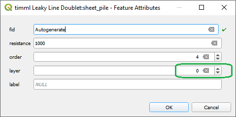
Remarks to the provided values:
* Because of a known issue in the TimML software, until this issue is resolved, the value of the resistance must be multiplied by the permeability. For normal sheet pile walls a resistance value of 100 d for interlock leakage is a good choice. In this case the chosen value needs to be increased by multiplying with the applicable aquifer permeability in the effected layer (R=100 d becomes R=10*100 d).
** In the real-world counting starts with 1. However, Tim is programmed in Python and in Python counting starts with 0. You will get used to it.
- Close the editing mode with a click on () and you are asked to save your changes.
- Open the attribute table for Leaky Line Doublet (click or press F6) to check hydraulic resistance values for the sheet pile walls.
Adding a Well
- In GIS-Tim go to the tab Elements and select the Well element.
- A name for the element can be given in the pop-up panel, e.g. pumping_wells.
- In the Layers panel right click on the layer
 timml Well:pumping_wells and start the editing mode by clicking the Toggle Editing button ().
timml Well:pumping_wells and start the editing mode by clicking the Toggle Editing button (). - Next click on Add point feature (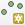).
- With you left mouse button add the first well location similar to point 1 in Figure 8.
- In the pop-uped window, fill in the well parameters discharge (50 m3/d), radius (0.1 m), resistance (1 d) and layer (0).
- Now add the other 7 wells locations in a fast way: do not import parameters with every single point. We will do that later. Just click OK on each Feature Attribute window.

- In the Layers panel right select layer timml Well:pumping_wells and open the Attribute Table (F6).
- Start the editing mode and fill in the values shown in Figure 9. Don’t forget the column ‘Label’.
The discharge value in the table is a first guess to be adjusted later to desired level of -3.5 m groundwater lowering in the building pit. - Stop the editing mode, save your work and close the window.
- Select layer timml Well:pumping_wells again, click right and from the menu select Show labels.
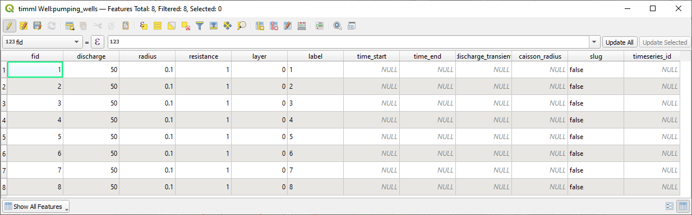
When you finished the input of the wells and their parameters, you have to look back to the combination of wells and sheet pile wall. The reason is that near a well the flow is strong and therefore the flow through the wall is increased. This may lead to extremities in the calculation if wall segments are chosen too large. Tim uses control points but they are set at regular distances on the doublet (the number of control points is 1+order). It is necessary to divide the wall in smaller sections near well locations. The length of each section should be chosen equal to approximately the distance of the wall to the nearest well.
- Select the Leaky Line Doublet in the Layers panel and start the editing mode.
- Activate the Vertex Tool (
 ) and then hoover along the sheet pile line in your drawing. The line element near your pointer lights up.
) and then hoover along the sheet pile line in your drawing. The line element near your pointer lights up. - With the combination of Shift + double left click, you can add a new vertex to the line. Repeat that for the number of points you want to add.
Figure 10 shows the result of positioned extra points in the line.
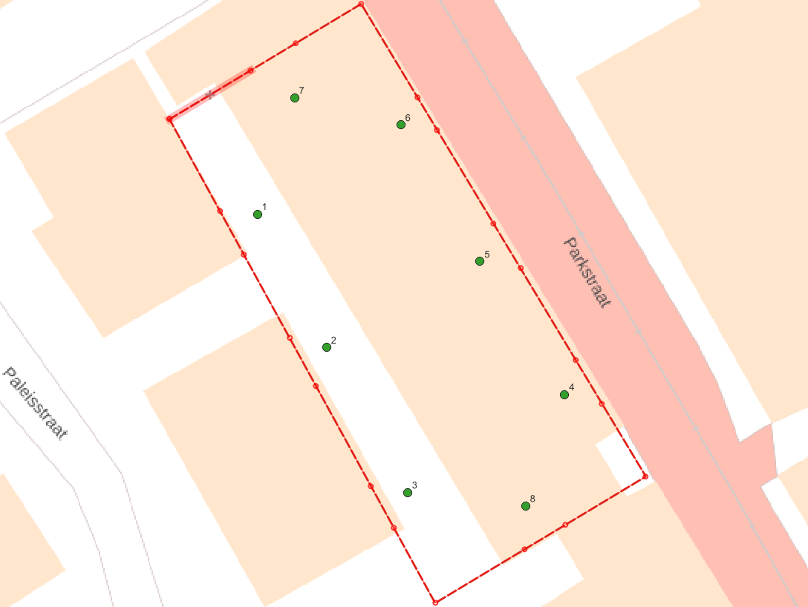
Computing the groundwater head drawdown
- Zoom in or out to desired domain for which you want to see the model results.
- In the QGIS-Tim panel select the tab Compute.
- Select the button Set to current extent to define the Domain.
- Grid spacing will follow automatically but for now make the results mesh more dense by changing “Grid spacing” to 3.00 m.
- In the “Output” section give the name of the file where you want to store the results.
- For contouring, select the check box “Auto-generate contours”.
- Set the increment for contouring to a proper value: 0.5, 0.25 or 0.1 as applicable for your study.
- Press the Compute button to have the program perform the calculations.
A black Python.exe window pops up indicating that the TIM calculation started on the background. You can ignore this window but keep it open. Of course you van minimize it. If the calculation was completed successful, you will see this echo in QGIS.
 .
.
Studying output results
After the calculation you see that the result is automatically added to the Layers panel, probably called “case-TheHague output”. Results are presented as Mesh, Raster and Vector data. Contours are saved as vector.
Although these layers / groups are checked, the data is not visible. That is because the geopackage was added last, and QGIS adds layers at the end of the list.
Let’s move the layer “pastel” to the background.
- Select the layer “pastel” and drag it with your left mouse button to the bottom of the list of layers.
- Uncheck mesh and raster to only visualize contours on the base map.
- Uncheck contour lines of layer 1 and 2 to get only the result for layer 0 on screen as in Figure 11.
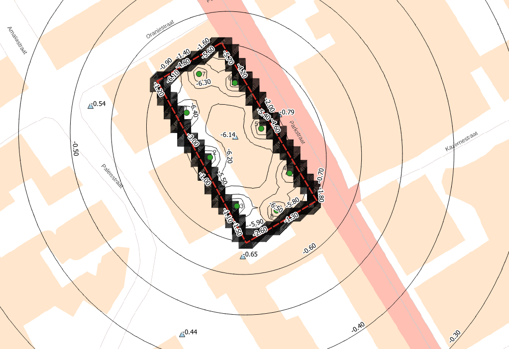
The lowering in the building pit is shown to be around -6.20 m. To get it around -3.50 m as demanded the well discharge should be decreased accordingly. An extra calculation with half the flow per well will be sufficient.
- Go to the well attribute table, adjust the flow to 60% (30 m3/d per well) and compute the model again.
Adding observations wells
The city authorities that perform quality checks on the effect of construction projects insisted on the installation of some piezometers to assure reduction of risks for surrounding old monumental structures.
- In the QGIS-Tim panel go to the Elements tab and select the element Observation.
- Give a name in the pop-up panel, e.g. “observations”.
- Then go to the Layers panel and select the layer 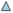timml Observation:observations.
- Go to the toolbar with drawing options and activate Toggle editing ().
- Go right to the Add point feature () and drop some piezometers in the drawing.
We propose to use 5 points (see Figure 8): 1 point in the centre of the building pit, 1 near the lower corner outside, 1 outside near the middle of the eastern sheet pile section and just 2 near street corners. - Compute the model again.
Results of calculations at the observation locations are presented as Vector data in the Layers panel.
- Uncheck/check layers in order to display observation results only.
By default, the label at each observation location is the calculated head for layer 0. Perhaps you see a second number near the location. For your information: this is the “location number” label belonging to the model input in layer timml Observation:observations.
We can observe that the lowering of groundwater around the building pit is quite high due to leakage of the sheet piles or leakage through the bottom clay layer with small resistance. Therefore, it is needed to improve the wall quality or the length. First we check the effect of the clay layer by studying a cross section.
Creating a cross section
- To make a cross section, use the iMOD plugin toolbar and click on the Cross Section widget (
 )
) - From the dropdown menu on the left of this panel, select the mesh () with *_layer_0.
- Press Add.
- Start to define you cross section with a click on the button Select location.
- Draw your cross section by left clicking on the map. Stop drawing with a right click. You can redraw this line anytime you like.
- Satisfied with your line? Click the button Plot to draw this layer in the cross section. Your screen might look like Figure 12.
- By using the Export button you can store results from the cross section in a CSV file.
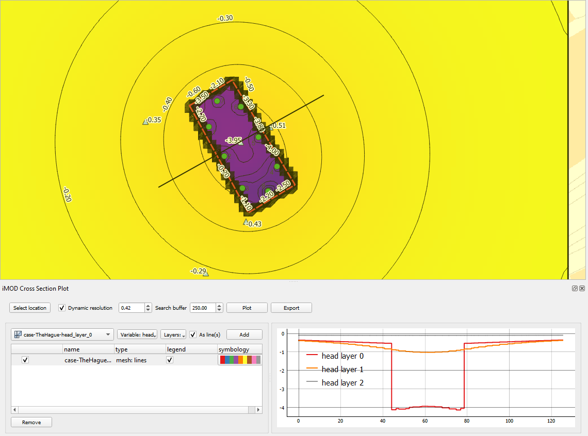
Making calculations with parameter variations or checking bandwidth
The authorities demand a drawdown effect of dewatering at a maximum of 0.10 m at surrounding buildings. This means that improvements for leakage control are needed but first we need to discover what parameter to focus on.
To check whether the wall resistance or the bottom resistance of the layer 1 (below the building pit) is more important we can make 2 variations; one with C-clay=200 d and one with R-wall=500 d.
Of course you can change your model input, rerun the model and overwrite your model results. The next steps show you how to change the model input and save the results in separate .gpkg and .nc files.
- In the input group select layer timml Aquifer:…
- Open the Attrribute Table (F6) and change the value for “aquitard_c” in layer 1 into 200 d.
- In the QGIS-Tim panel go to the tab Compute and change the name of the output, e.g. case-TheHague_v1.
- Click Compute to run variant 1.
Check in the Layers panel and see that the results are not overwritten but added to the groups, e.g. layer case-TheHague_v1-timml Observation:observations is added to the group Vector.
- Fill in your calculated heads at the observation locations in Table 4 or use Excel.
| Observation location |
Default: Cc=40d Rw=100d* |
your value: |
Variant 1: Cc=200d Rw=100d* |
your value: | Variant 2: Cc=40d Rw=500d* |
your value: |
|---|---|---|---|---|---|---|
| Pb1 centre pit | -3.95 | … | -10.44 | … | -4.00 | … |
| Pb2 south corner | -0.43 | … | -0.54 | … | -0.35 | … |
| Pb3 street corner | -0.35 | … | -0.43 | … | -0.31 | … |
| Pb4 south point | -0.29 | … | -0.32 | … | -0.25 | … |
| Pb5 east wall | -0.51 | … | -0.70 | … | -0.41 | … |
* Known issue in TimML: you have to multiply Rw by layer permeability (Rw*10).
Let’s now run Variant 2.
- In layer timml Aquifer:… reset the value for “aquitard_c” in layer 1 to the default of 40 d.
- In layer timml Leaky Line Doublet:… change the value for “resistance” into 5000 d (500x10).
- In the QGIS-Tim panel go to the tab Compute and change the name of the output, e.g. case-TheHague_v2.
- Click Compute to run variant 2.
- Fill in your calculated heads at the observation locations in the table above.
To get the same lowering in the building pit, in the second variation the well flow might be reduced to 33% (10m3/d per well). For the sheet pile wall, increasing the wall quality or decreasing interlock leakage doesn’t make a big difference.
We can conclude that the best investment during the phase of design would be to perform extra hydrogeological research, e.g. by making more cpt’s, borings or performing a pumping test.
Sheet piles with extra depth
Suppose the best guess value of the clay layer resistance was right, then a mitigation measure for the effect of dewatering in the construction phase could be the installation of the wall to a deeper level where additional hydraulic resistance of 100d can be found at a depth of -13 m to -15 m NAP.
If we want to create extra depth of the sheet pile we will have to introduce it in a deeper layer. There are 2 options to implement it in your model:
- Add a copy of the geometry of the sheet pile wall to the existing Leaky Line Doublet shape and assign it to layer 1.
- We recommend to create an extra Leaky Line Doublet element. In this case it is more easy to switch on/off this additional element in your sensitivity analysis.
How to copy the sheet pile wall to an extra Leaky Line Doublet element?
- In the QGIS-Tim panel go to the tab Elements and add a second Leaky Line Doublet and give it a name, e.g. “sheet_pile_L1”
- Go to the tab GeoPackage and see that the element separately is added to the list. Here is can switch this element on / off for a calculation.
- In the Layers panel select the new layer timml Leaky Line Doublet:sheet_pile_l1.
- Open its Attribute Table (F6) and start the editing mode. The table is empty.
- Also open the Attribute Table of the first Leaky Line Doublet and select the existing element.
- Click on the Copy button (
 ) in the source table to copy the selected row to the clipboard.
) in the source table to copy the selected row to the clipboard.

- In the target table, paste it with the Paste button () as a new layer.
- Assign this new sheet pile to layer=1.
- Stop editing and save the new element.
- Click Compute to start the computation again.
The results are directly visible in the contours and cross-section again.
We can conclude that the drawdown in the building pit increases with a factor of almost 2 (-7.48 m at the centre of the building pit). Therefore, we adjust the well flow to 3.95/7.48*30=15.54 m3/d per well.
- Implement this change in the timm Well element and recalculate the model.
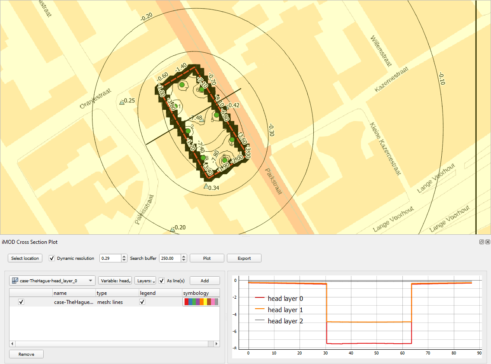
We conclude that the lowering around the building pit with deep sheet piles improved significantly.
Next also alternatives with a shallow concrete cut-off wall will be calculated for a shallow and a deep wall. In that case we have R=1000 d, but note that the input in the attribute than becomes k*R=10000 due to the error in Tim.
- After changing the value in attribute tables of wall elements, we can compute again, switching off and on the element for the deep wall section (tab Geopackage on the QGIS-Tim panel).
Again extra calculation is needed to adjust well extractions for drawdown in the building pit.
Results of calculations are gathered in the following table, showing extractions and head outside the wall at South East monitoring position.
| Wall alternative at c1=40 d |
Wall resistance [d] |
Groundwater extraction [m3/d] |
Head SE monitoring [dh in m] |
|---|---|---|---|
| Shallow sheet pile wall | 100 | 240 | -0.39 |
| Deep sheet pile wall | 100 | 122 | -0.16 |
| Shallow cut-off wall | 1000 | 208 | -0.30 |
| Deep cut-off wall | 1000 | 80 | -0.04 |
Installation of 15 m deep sheet pile wall or cut-off wall can be elaborated in a geotechnical design.
Still, probably some decrease of interlock leakage is needed when sheet piles are chosen. Interlock sealing or maybe irrigation of water in a shallow drain pipe around the building pit could lead to approval by authorities.
Effect of a not closed wall (about 20 cm)
Authorities are afraid that leakage incidents could be harmful for surrounding monuments. The effect of leakage can be studied by creating a fictitious little opening in the wall. This can be done e.g. by changing the values of first and last coordinate of the leaky line doublet.
- Select the Leaky Line Doublet in the Layers panel
- In the editing toolbar go to the toggle editing option () and check the vertex option ().
- On the drawing panel select a point in the line element of the wall and right click.
The list with coordinates appears in the vertex editor at the lower left corner of the screen. There you can edit the coordinates of all points in the line. Another option is to zoom in and select a point in the line element and drag it to a new position.
When the coordinates differ a gap results, in the studied case we created a 0.2 m wide gap. It might be elaborate to perform but the result is shown in the next figure. The result is calculated by using a small grid spacing. At this created gap a large flow results in the corner of the building pit, leading to an insufficient drawdown in the building pit and a 0.1 – 0.2 m larger lowering outside the building pit at that location.
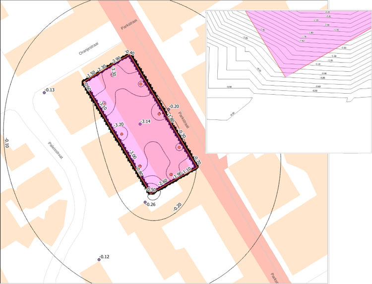
When the contractor wants to restore the dewatering level inside the building pit, the drawdown outside the gap will even grow further.
Using Python for sensitivity analyses with a QGIS-Tim model
QGIS-Tim offers the opportunity to export the geopackage of the created model to a Python script. This makes it possible to use the script for other ways of calculation, e.g.: - Calculation of model results in other Python environments, like Anaconda or Spyder or in a notebook. - Use in other python oriented programs, like the Probabilistic Toolkit.
- If input of all elements is ready and the model has proved to run properly, go to the QGIS-Tim panel and the tab Geopackage.
- At the bottom press the button Convert GeoPackage to Python script.
- After a short period for translation in Python the explorer panel appears where you can enter the name you want to give for the python file, e.g. “DHRVS.py” and store it in a directory you choose to save your work. The file looks like:
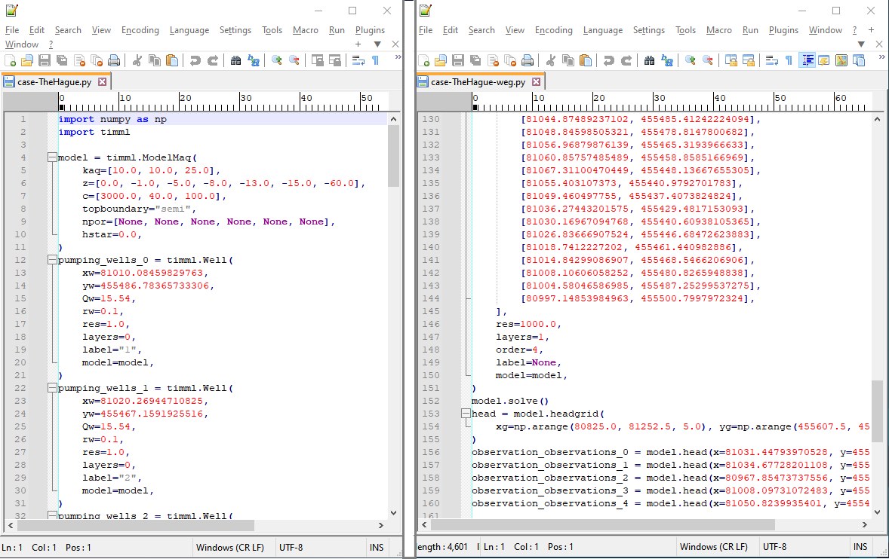
As can be seen the converted Python file contains a call on main necessary Python packages and all data coordinates and parameter values related to the elements that were selected in the model that was created in QGIS-Tim. At the end of the Python file the model.solve command is stated after which all head values in the domain with the desired mesh density are determined and also at demanded observation points.

As can be seen the Python script for TimML is written in a very dedicated and condensed manner.
To get the Python file running in a platform like Anaconda or Spyder, extra lines should be added at wish, to get the output that the user needs.
Also this file can be used for geostatistical and scenario-analysis. There are several ways of handling this kind of study, like writing an additional Python program to perform repeated calculations and statistical analysis on results. But another way is to use the Probabilistic Toolkit (PTK), a platform for statistical analysis to be used together with geotechnical design programs, developed by Deltares. The PTK can be used for study of model sensitivity for variation of parameter values or reliability analysis.
The PTK can be downloaded free of charge at Probabilistic Toolkit - download.
- Open the Probabilistic Toolkit from your desktop () or Windows menu (Deltares folder).
The Toolkit opens at the first of 5 tabs: Model.
In the section Model Type check if the dropdown menu Type is set to Internal
In the section Model Type check if the dropdown menu Language is set to Python and a the field Version appears.
Select the ‘…’ in the field Version and give the path where PTK can find the Python interpreter, e.g. Spyder at .
Than we copy the Python file we converted from QGIS-Tim into the Source code window. We handle the process in this way because we want to change some lines in the source code to get the program running in PTK.
Next the specific parameters must be selected that are expected to be probably most relevant to variations in results. In the source code used in the PTK those parameters will not have input on a value but need to be mentioned with a name that the PTK can use for input selection in the calculations.
The parameters that seem to be important are:
- The hydraulic resistance of the sheet pile wall Rlld.
- The resistance c1 of the first clay layer.
- The permeability of the sand layer k01.
- The resistance c2 of the second clay layer at -14 m NAP.
This is shown in the next figure.

In the Source code we have to change a few things:
- In the PTK panel input we use the parameter names Rshp, czba, khol and cbasis, give them values (10000, 40, 10, 100)
- in the variables tab and in the source we assign these values to the parameters by statement lines in the source code.
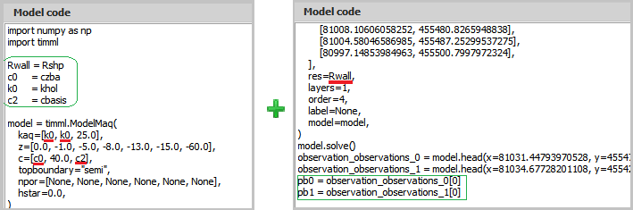
In the source code we change the values in the element declaration of the aquifer, leaky line doublet Damw0_0, to the names of the parameters Rlld, c1, khol, c2.
We make this a simple analysis by using only the sheetpile in the upper layer (maybe eliminating the element statement lines for the sheetpile in the second layer). At the end of the source code we eliminate the following lines form the converted file:
head = model.headgrid(xg=np.arange(80940.0, 81166.0, 4), yg=np.arange(455554.0, 455360.0, -4) )
And also we eliminate the lines
observation_peilbuis_2 = model.head(x=80970.16497991727, y=455495.54316352855) observation_peilbuis_3 = model.head(x=81004.86605597858, y=455389.68291883526) observation_peilbuis_4 = model.head(x=81049.06450220713, y=455485.0645022071)
Because we only are interested in 2 points we use the first two observation points and we add
pb0 = observation_peilbuis_0[0] pb1 = observation_peilbuis_1[0]
In the output screen of the PTK we add variables pb0 and pb1.
We check if the program works properly by performing the Run model in Single run mode (in toolbar of PTK). By pressing the arrow the calculation starts running. In the Run model tab we find the results of our calculation. Check if it complies with your earlier calculations in QGIS-Tim.
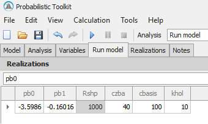
If results are as expected, we can step to a sensitivity analyses. For each selected parameter a distribution is defined with certain limits or characteristic values. Distribution formulas can be chosen based on knowhow of the user. Best guess of the parameter value distributions are given in the next table.
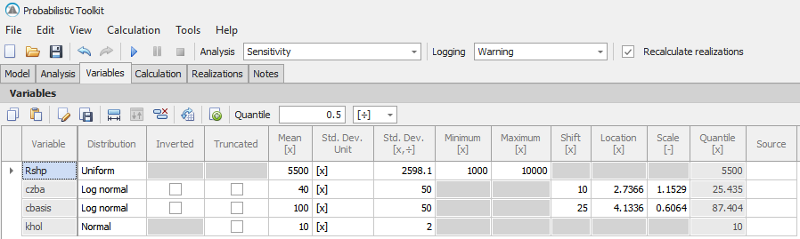
Parameter value distributions of sheetpile resistance Rshp, silt layer resistance czba, basic peat layer resistance cbasis and permeability of Holocene sand khol are shown in graphs below.
figuur Pameter value distributions of sheetpile resistance Rshp (??)
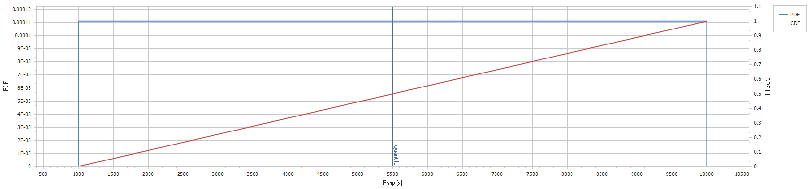
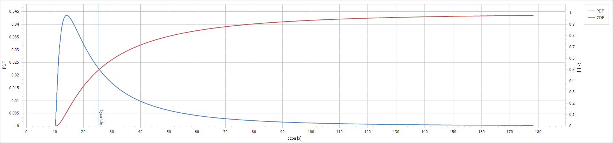
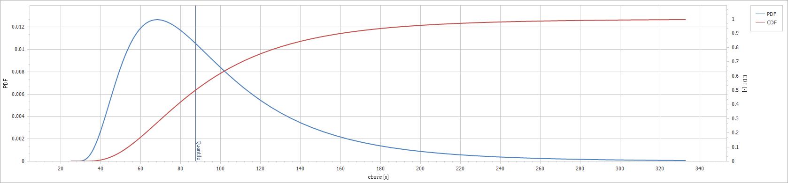
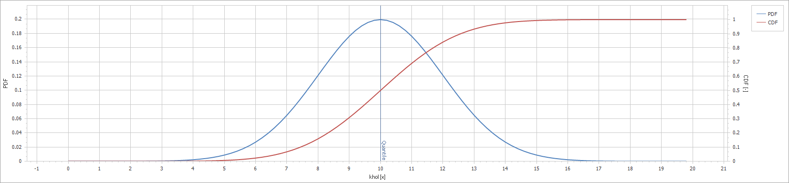
Low and high value of resistivity are set in the Calculation tab to 10 and 90%.
In the tab Sensitivity we can find in what extent parameter variations contribute to model results. In the next graph it is shown what parameter variation means for drawdown in the building pit. We conclude that for a situation with a sheet pile wall in only the first sand layer the variation of the resistance of the loamy layer determines the drawdown, and with that this factor determines the amount of extraction in that situation for the largest part. Translated to practical considerations, it is worthwhile to spend extra budget on determining the homogeneity of that layer and the vertical permeability of the loamy layer in more detail.
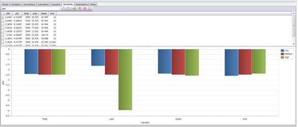